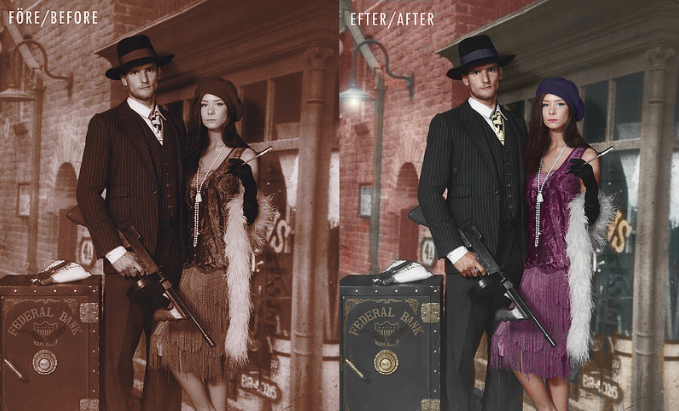
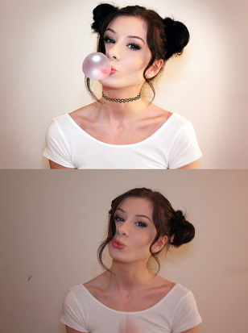
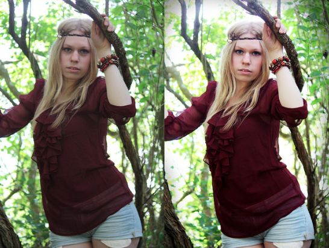
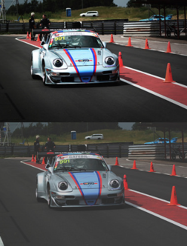

Sofias favorit hobby
En av mina största favorithobbys är photoshop. Jag tycker det är väldigt roligt för att man kan skapa och fixa vad man vill. Här är några av mina verk:

Från sepia till färg
Orginalbilden är sepia och ser därför lite tråkig ut. Jag tog mig därför an utmaningen att återskapa färgen i bilden.

Rätta till och lägga till
Denna bilden innehåller många fel:
Toffsarna är på sne
Fläck på väggen
Dålig färg
Saknaden av detaljer
Därför valde jag att lägga till ett halsband och ett tuggummi som gav bilden nytt liv! Jag har även fixat till färgen i bilden, toffsarna och fläckarna.

Snygga till
I denna bilden behövdes ljuset piggas upp lite. Modellen ser även trött ut och har fula skoggor i ansiktet som drog ner bilden.

Från dassig till HD
Orginalbilden är alldeles för grå och tråkig och behövde en rejäl upp fräschning i både färg, ljus och kontrast.